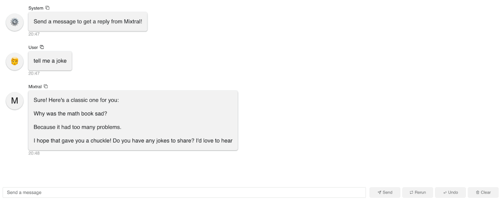

Build a Mixtral Chatbot with Panel
Mistral AI just announced the Mixtral 8x7B and the Mixtral 8x7B Instruct models. These models have shown really amazing performance, outperforming Llama 2 and GPT 3.5 in many benchmarks. They’ve quickly became the most popular open weights models in the AI world. In this blog post, we will walk you through how to build AI chatbots with the Mixtral 8x7B Instruct model using the Panel chat interface. We will cover three methods:
- Method 1: Run Mixtral with Mistral API (fastest)
- Method 2: Run Mixtral with transformers (GPU required)
- Method 3: Run Mixtral with llama.cpp (can run on Macbook)
Method 1: Run Mixtral with Mistral API (fastest)
We just got access to the Mistral API, so we have to give it a try!
Let’s first generate a Mistral API from https://console.mistral.ai/users/api-keys/.

There are three chat endpoints with the Mistral API:
- Mistral-tiny: Mistral 7B Instruct v0.2, a better fine tuning of the initial Mistral-7B
- Mistral-small: Mixtral 8x7B, mastering multiple languages and code
- Mistral-medium: a top serviced model, outperforming GPT3.5
Since this blog post is about Mixtral 8x7B, let’s use Mistral-small when we create the chatbot. Fun side note: we found Mistral-small and Mistral-medium generate much better code than Mistral-tiny.
After we install mistralai in our Python environment, we can try some basic code to see how it works:
- No streaming:
from mistralai.client import MistralClient
from mistralai.models.chat_completion import ChatMessage
model = "mistral-tiny"
messages = [
ChatMessage(role="user", content="What is the best French cheese?")
]
client = MistralClient(api_key=api_key)
# No streaming
chat_response = client.chat(
model=model,
messages=messages,
)
chat_response
- With streaming:
model = "mistral-small"
messages = [ChatMessage(role="user", content="What is the best French cheese?")]
response = client.chat_stream(model=model, messages=messages)
message = ""
for chunk in response:
part = chunk.choices[0].delta.content
if part is not None:
message += part

Build a Panel chatbot
Before we build a Panel chatbot, let’s make sure we install mistralai and panel in our Python environment and set up Mistal API key as an environment variable: export MISTRAL_API_KEY="TYPE YOUR KEY".
- We wrap the code above in a function
callback. - The key to building a Panel chatbot is to define
pn.chat.ChatInterface. Specifically, in thecallbackmethod, we need to define how the chat bot responds to user message – thecallbackfunction. - To turn a Python file or a notebook into a deployable app, simply append
.servable()to the Panel objectchat_interface.
"""
Demonstrates how to use the `ChatInterface` to create a chatbot using
Mistral API.
"""
import os
import panel as pn
from mistralai.client import MistralClient
from mistralai.models.chat_completion import ChatMessage
pn.extension()
async def callback(contents: str, user: str, instance: pn.chat.ChatInterface):
model = "mistral-small"
messages = [ChatMessage(role="user", content=contents)]
response = client.chat_stream(model=model, messages=messages)
message = ""
for chunk in response:
part = chunk.choices[0].delta.content
if part is not None:
message += part
yield message
client = MistralClient(api_key=os.environ["MISTRAL_API_KEY"])
chat_interface = pn.chat.ChatInterface(callback=callback, callback_user="Mixtral")
chat_interface.send(
"Send a message to get a reply from Mixtral!", user="System", respond=False
)
chat_interface.servable()To launch a server using CLI and interact with this app, simply run panel serve app.py and you can interact with the model:

Method 2: Run Mixtral with transformers (GPU required)
The second method is to use the latest Transformers from HuggingFace. We adapted the code from this blog post: https://huggingface.co/blog/mixtral.
The following code:
- Defines the model
mistralai/Mixtral-8x7B-Instruct-v0.1 - Uses the Tokenizer from this model to format the input user message
- Uses the transformers pipeline to specify the text-generation pipeline, the model, and the 4-bit quantization.
- Uses the
TextStreamerto stream the text output
# REF: Code adapted from https://huggingface.co/blog/mixtral
!pip install -U "transformers==4.36.0" --upgrade
!pip install accelerate
!pip install bitsandbytes
from transformers import AutoTokenizer
import transformers
import torch
model = "mistralai/Mixtral-8x7B-Instruct-v0.1"
tokenizer = AutoTokenizer.from_pretrained(model)
pipeline = transformers.pipeline(
"text-generation",
model=model,
model_kwargs={"torch_dtype": torch.float16, "load_in_4bit": True},
)
messages = [{"role": "user", "content": "Explain what a Mixture of Experts is in less than 100 words."}]
prompt = pipeline.tokenizer.apply_chat_template(messages, tokenize=False, add_generation_prompt=True)
from transformers import TextStreamer
streamer = TextStreamer(tokenizer, skip_prompt=True)
outputs = pipeline(prompt, streamer=streamer, max_new_tokens=256, do_sample=True, temperature=0.7, top_k=50, top_p=0.95)We ran the code using one A100 GPU:

Build a Panel chatbot
Same as what we saw in Method 1, we wrap the code above in a function callback, and define the callback in the pn.chat.ChatInterface function:
import panel as pn
from transformers import AutoTokenizer, TextStreamer
import transformers
import torch
pn.extension()
async def callback(contents: str, user: str, instance: pn.chat.ChatInterface):
messages = [{"role": "user", "content": contents}]
prompt = pipeline.tokenizer.apply_chat_template(messages, tokenize=False, add_generation_prompt=True)
streamer = TextStreamer(tokenizer, skip_prompt=True)
outputs = pipeline(prompt, streamer=streamer, max_new_tokens=256, do_sample=True, temperature=0.7, top_k=50, top_p=0.95)
message = ""
for token in outputs[0]["generated_text"]:
message += token
yield message
model = "mistralai/Mixtral-8x7B-Instruct-v0.1"
tokenizer = AutoTokenizer.from_pretrained(model)
pipeline = transformers.pipeline(
"text-generation",
model=model,
model_kwargs={"torch_dtype": torch.float16, "load_in_4bit": True},
)
chat_interface = pn.chat.ChatInterface(callback=callback, callback_user="Mixtral")
chat_interface.send(
"Send a message to get a reply from Mixtral!", user="System", respond=False
)
chat_interface.servable()Run panel serve app.py in CLI to interact with this app. Here is an example of our interaction with the model:

Method 3: Run Mixtral with llama.cpp (run on Macbook)
Set up
First, we need to download llama-cpp-python, which is a Python binding for llama.cpp. Depending on your computer, the steps to install it might look different. Since we are using a Macbook M1 Pro with a Metal GPU. Here are the steps to install llama-cpp-python with Metal: https://llama-cpp-python.readthedocs.io/en/latest/install/macos/. Here is what I did:
!CMAKE_ARGS="-DLLAMA_METAL=on" FORCE_CMAKE=1 pip install llama-cpp-pythonSecond, let’s download the 4-bit quantized version of the Mixtral-8x7B-Instruct model form Hugging Face. Note that this file is quite big, about 26GB.
wget https://huggingface.co/TheBloke/Mixtral-8x7B-Instruct-v0.1-GGUF/resolve/main/mixtral-8x7b-instruct-v0.1.Q4_0.ggufBecause Mixtral is not merged in llama.cpp yet, we need to do the following steps.
# REF: https://github.com/abetlen/llama-cpp-python/issues/1000
git clone https://github.com/ggerganov/llama.cpp
cd llama.cpp
git checkout mixtral
make -j
make libllama.soFinally, don’t forget to install the other needed packages such as transformers and panel.
Run Mixtral
Below is the Python code for running Mixtral with llama.cpp. Here are the steps:
- We first need to define an environment variable LLAMA_CPP_LIB directed to the libllama.so file, which is saved under the llama.cpp directly we got from
git cloneearlier. - Then we define our
llmpointing to themixtral-8x7b-instruct-v0.1.Q4_0.gguffile we downloaded fromwget. - Note that we need to load the
tokenizerfrom the Mixtral-8x7B-Instruct model and format the input text the way the model expects. - Then we can get responses from
llm.create_completion. The defaultmax_tokensis 16. To get reasonable good responses, let’s increase this number to 256.
import os
os.environ["LLAMA_CPP_LIB"] = "/PATH WHERE YOU SAVED THE llama.cpp DIRECTORY FROM GIT CLONE/llama.cpp/libllama.so"
from llama_cpp import Llama
from transformers import AutoTokenizer
llm = Llama(
model_path="./mixtral-8x7b-instruct-v0.1.Q4_0.gguf",
n_gpu_layers=0,
)
model = "mistralai/Mixtral-8x7B-Instruct-v0.1"
tokenizer = AutoTokenizer.from_pretrained(model)
messages = [{"role": "user", "content": "Explain what a Mixture of Experts is in less than 100 words."}]
prompt = tokenizer.apply_chat_template(messages, tokenize=False)
response = llm.create_completion(prompt, max_tokens=256)
response['choices'][0]['text']Here you can see the code running in Jupyter Notebook cells. Please be patient as this will take some time. After a few minutes, the model outputs results based on our input prompt:

Build a Panel chatbot
- Same as what we have seen before, let’s wrap the code logic above in a function called
callback, which is how we want our chatbot to respond to user messages. - Then in
pn.chat.ChatInterface, we definecallbackas thiscallbackfunction.
import os
os.environ["LLAMA_CPP_LIB"] = "/PATH WHERE YOU SAVED THE llama.cpp DIRECTORY FROM GIT CLONE/llama.cpp/libllama.so"
from llama_cpp import Llama
from transformers import AutoTokenizer
import panel as pn
pn.extension()
async def callback(contents: str, user: str, instance: pn.chat.ChatInterface):
messages = [{"role": "user", "content": contents}]
prompt = tokenizer.apply_chat_template(messages, tokenize=False)
response = llm.create_completion(prompt, max_tokens=256, stream=True)
message = ""
for chunk in response:
message += chunk['choices'][0]['text']
yield message
model = "mistralai/Mixtral-8x7B-Instruct-v0.1"
tokenizer = AutoTokenizer.from_pretrained(model)
llm = Llama(
model_path="./mixtral-8x7b-instruct-v0.1.Q4_0.gguf",
n_gpu_layers=0,
)
chat_interface = pn.chat.ChatInterface(
callback=callback,
callback_user="Mixtral",
message_params={"show_reaction_icons": False}
)
chat_interface.send(
"Send a message to get a reply from Mixtral!", user="System", respond=False
)
chat_interface.servable()- Finally, we can run
panel serve app.pyto interact with this app. As you can see in this gif, it’s actually quite slow generating each word because we are running on a local Macbook. 
Conclusion
In this blog post, we used Mistral API, transformers, llama.cpp, and Panel to create AI chatbots that use the Mixtral 8x7B Instruct model. Whether you have Mistral API access, an A100 GPU, or a Macbook, you can try the Mixtral 8x7B Instruct model and build chatbots right away.
If you are interested in learning more about how to build AI chatbot in Panel, please read our related blog posts:
- Building AI Chatbots with Mistral and Llama2
- Building a Retrieval Augmented Generation Chatbot
- How to Build Your Own Panel AI Chatbots
- Build a RAG chatbot to answer questions about Python libraries
If you find Panel useful, please consider giving us a star on Github (https://github.com/holoviz/panel). Happy coding!